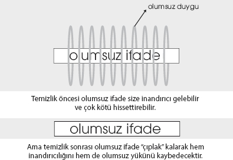

Formatlamaya 12 Temel Korkudan başlayalım. Eğer kaygılı biri olduğunuzu düşünüyorsanız, bu bölümü doğru uygulamak hayatınızı kurtaracaktır.
Öncelikle belirtmek isterim ki, amacımız olmamış şeyleri aklımıza getirip sinir bozmak değil! Amacımız, özellikle endişe ve anksiyete seviyeniz yüksekse, bunu düşürmek amacıyla olası kaygıları temizlemek.
Çoğu zaman kaygılı oluruz ve endişe duyduğumuz konunun farkına dahi varmadan bu kaygıyı hissetmeye devam ederiz. Hissettiğimiz kötü duygular bizim için o kadar normal gelmeye başlar ki, biz onları neden hissettiğimiz dahi sorgulamayız.
Kaygılarınızı diplerden, var olduklarının farkında bile olmadığınız yerlerden çıkarmak için onları bir listeden tarayacağız. İlk başta temel 12 ihtiyacımızı tarayacağız. Bu başlıklar altında olabilecek, kendi hayatımızdaki kaygıları birer birer çıkarıp temizleyeceğiz.
Daha önce söylediğimiz gibi, kötü duyguları
formatlayabilmek, önce onların ve nedenlerinin
farkına varmayı, daha sonra tetikleyebilmeyi
ve en son olarak temizlemeyi gerektirir.
Listeyi tararken, her ihtiyaç üzerinde çalışmaya gerek yok. Eğer, bahsedilen konu hakkında çok rahat olduğunuzu düşünüyorsanız o bölümü geçin ve sizin için önem teşkil edebilecek diğer kaygılar üzerinde çalışın.

Gözlerle test
Biz bu bölümde, farkında olmasak da içimizde olabilecek kaygıları temizleyeceğiz. Peki, hangi kaygılar üzerinde çalışacağımızı biliyor muyuz? Ya da belli bir konuda kaygı hissedip hissetmediğimizi biliyor muyuz?
Bunu aslında gözleriniz söyleyecek. Eğer şüphedeyseniz, daha önce bahsettiğimiz şekilde OLUMSUZ ifadeyi oluşturarak gözlerinizle tarayın. Zaten, eğer kötü hissederseniz belli pozisyonlarda bunu yakalıyor olacaksınız. Eğer hiçbir pozisyonda kendinizi kötü hissetmiyorsanız, tetiklemeye çalıştığınız konuda endişeniz yok demektir.
Olumlu ifadelerin kullanımı
3 farklı temizleme seçeneği var demiştik:
• Sadece OLUMSUZ
• OLUMSUZ + OLUMLU
• NeuroFormat® vuruşları
Eğer vuruş yapmadan temizliyorsanız ilgili bölümlerde vereceğimiz OLUMLU ifadeleri kullanabilirsiniz.